What You Should Know - PowerPoint: Show and Tell Fractions
 Important Vocabulary
Important Vocabulary
- Fraction – a part of a whole
- Visual Fraction Model – a picture that shows fraction pieces, and helps us visualize, or see, how much we have, need, or want
- Numerator – the top number in a fraction; in the fraction , 1 is the numerator
- Denominator – the bottom number in a fraction; in the fraction , 4 is the denominator
Background Information
Adding and Subtracting Fractions
To add or subtract fractions with the same denominators, add or subtract the numerators and keep the denominator the same.
For example, to add and , you would add 1 and 2 to get 3, and then keep the denominator 4, so the answer would be .
Here are the steps for adding and subtracting fractions with similar denominators:
- Identify the denominators of the fractions. (The denominator is the number on the bottom of the fraction.)
- Keep this number the same.
- Add or subtract the numerators. (The numerator is the number on the top of the fraction.)
Here are examples of adding and subtracting fractions with similar denominators:
Visual Fraction Models
Fractions show us a portion of a whole. Visual fraction models show fraction pieces and help us visualize, or see, how much we have, need, or want. A simple visual fraction model could simply be a shape broken up into equal parts. Here is an example of a square broken up into 4 equal parts. 3 of the 4 parts are colored in, so this Visual Fraction Model represents .
Visual fraction models can also be more elaborate. Here is a visual fraction model showing a pizza cut into 8 slices. When you remove 1 slice, you are taking of the pizza. This leaves you with of the pizza.
How to Insert and Format an Image in PowerPoint
Insert an Image Into a Slide Layout
- Click on one of the image icons in the box.
- The image icon with the computer lets you put in images from your computer.
- The image icon with the planet lets you put in images from the internet.
- Select an image.
- Click Insert.
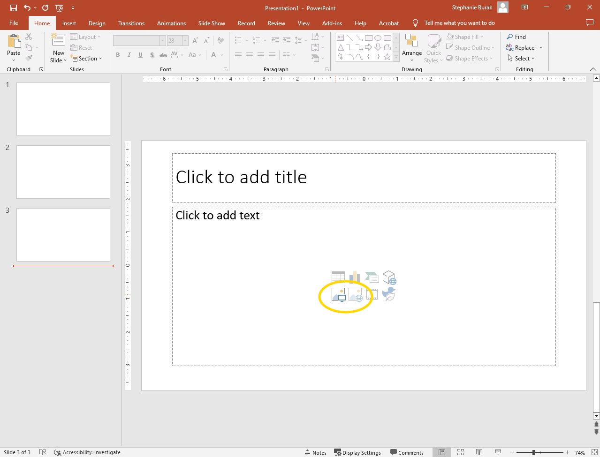
Insert an Image Without a Slide Layout
- Go to the Insert tab.
- Click Pictures.
- Select an image.
- Click Insert.
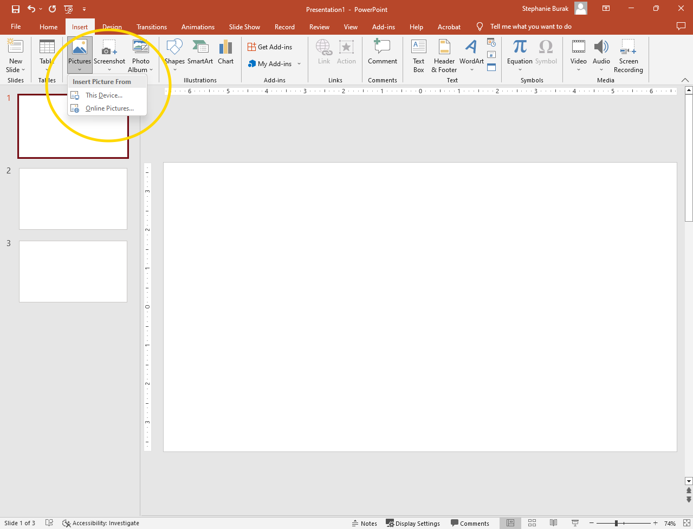
Format an Image
- Select the image you want to format.
- From here you can:
- Click and drag the image to move it.
- Click and drag the circles in the corners of the image to resize.
- Click and drag the circles on the sides to stretch or shrink the image.
- Click and drag the circular arrow to rotate the image.
- Click the Picture Format tab.
- Use the buttons in the Adjust section (to the left) to modify the image’s Color, add Artist Effects, or Reset Picture to its original format.
- Use the buttons in the Picture Styles section (in the middle) to choose a Picture Frame, Picture Border, or Picture Effects (such as a reflection or drop shadow).
- Use the buttons in the Arrange section if you want to put one image on top of another or behind another.
- Click and drag one image on top of another.
- Select an image and choose either Bring Forward or Send Backward, depending on what you want. You may need to press the button a few times if you have many images on the slide.
- Use the Crop button in the Size section to crop the image so that you see only part of it.
- Click the Crop button image. Bold black dashed lines will appear on the image.
- Drag the black lines until the image is cropped the way you want it.
- Click on the slide to see your new cropped image as it will appear in the slide presentation.
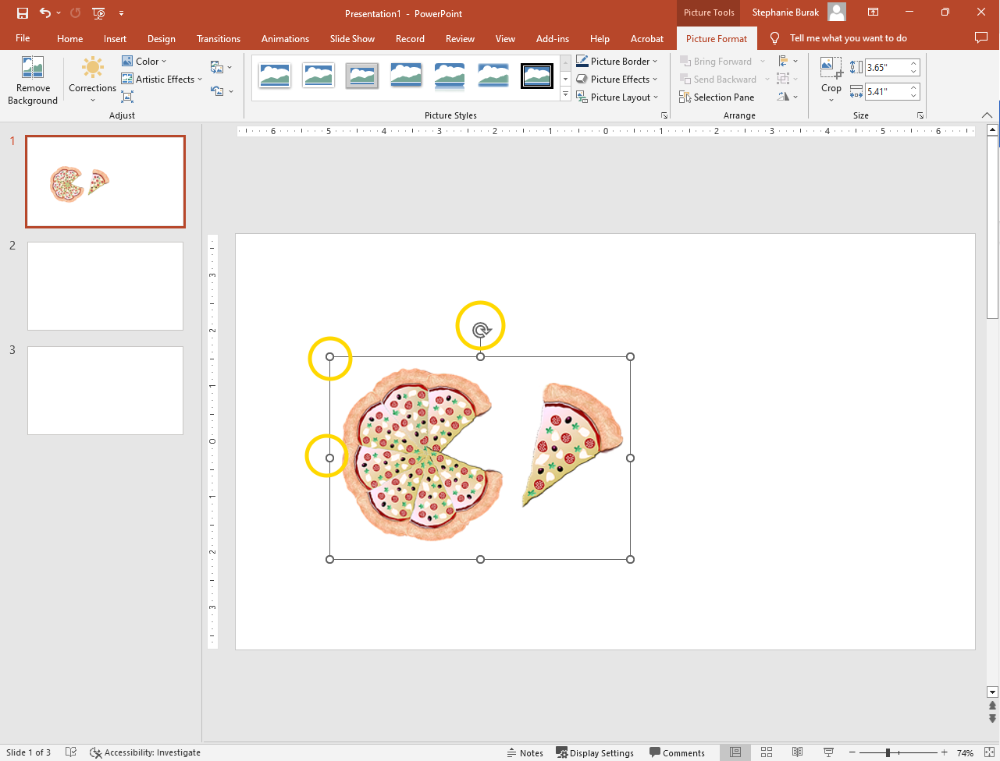
How to Insert and Modify Shapes in PowerPoint
- Go to the Insert tab and click Shapes.
- Select the shape you want.
- Click and drag on the slide to create the shape.
- To modify a shape, follow these steps:
- Select the shape you want to modify.
- Click and drag the shape to move it.
- Click and drag the circles on the sides and corners to resize, stretch, or shrink the shape.
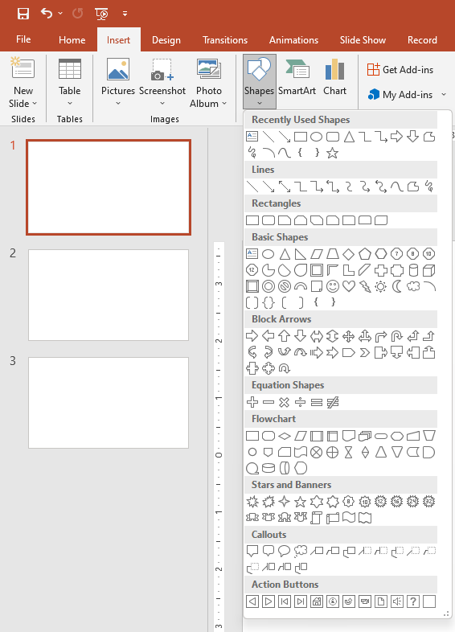
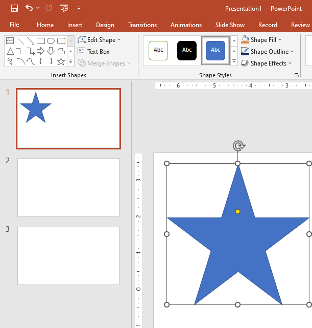
How to Copy a Slide in PowerPoint
If you want to make a slide that is very similar to a slide you already have, it may be easiest to copy the slide and then make the small changes.
- Under the Home tab, click on the down arrow next to New Slide.
- Choose Duplicate Selected Slides from the dropdown menu.
- If you need to change the order of the slides, click on the slide thumbnail in the lefthand column and drag it where it needs to be.
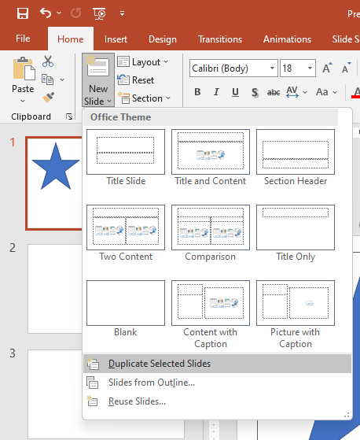
How to Insert Fraction Equations into PowerPoint
To add fraction equations to your presentation, you have two choices: You can “ink”, or write, the equation by drawing it on the screen. Or, you could type out the equation.
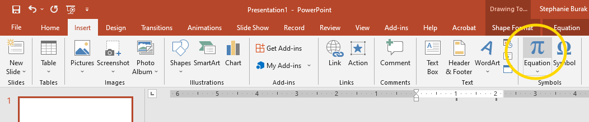
To “Ink” a Fraction Equation:
- Go to the Insert tab.
- Click the Equation button image.
- Click Ink Equations.
- Use your mouse, touchpad, or stylus to handwrite the equation in the yellow box.
- You can see your typed equation in the Preview box above.
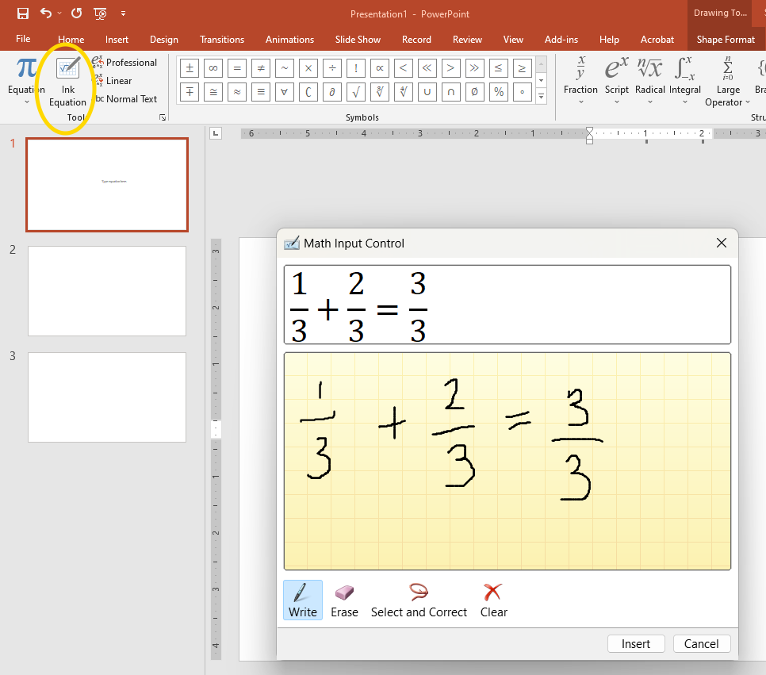
- If you need to make corrections,
- Click Erase and then click and drag the eraser over the lines you want to redraw.
- Or, click Select and Correct and then click and drag an orange dotted line around the section you want corrected. You can choose from the suggested corrections, or hit Close if none are correct.
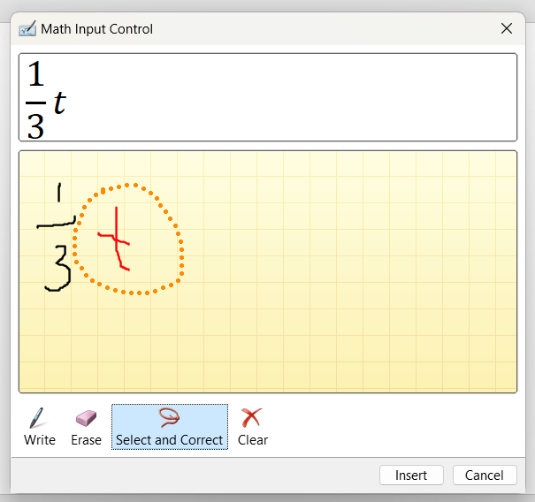
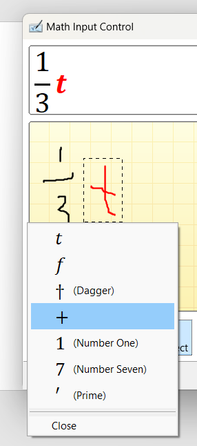
To Type a Fraction Equation:
- Go to the Insert tab.
- Click the Equation button image.
- Select Fraction.
- Choose one of the four basic Fraction formats shown at the top of the dropdown menu. The fraction will be inserted into your slide. (You will fill in the numbers at the end)
- Use the plus, minus, or equal sign on your keyboard, or search for the symbol you need in the Symbols section and click on it.
- Follow steps 5 and 6 to continue adding fractions and symbols as needed.
- When done, fill in the numerators and denominators of your fractions.
- Click the box at the top of the fraction. Type in the numerator.
- Click the box at the bottom of the fraction. Type in the denominator.
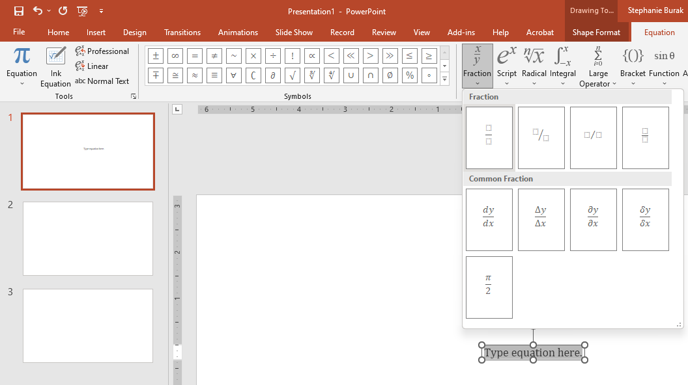
Tips for Good Visual Presentations
A good visual presentation helps the audience understand something new, and does it in a way that meets the audience’s needs or interests. Here are some tips to make your presentation successful:
- Think about your audience. What would keep their attention? How do they like to learn?
- Use language that is clear and to the point.
- Use font that is 24pt or larger so that it is easier to read.
- Include useful and relevant images.
- Less is more. Too many pictures and words can be distracting.


Career Connection and Real-World Application
Careers Using PowerPoint
PowerPoint is an important tool for many careers. Sales professionals use it to create presentations that help them “close deals” (sell their products or services). They may also use PowerPoint to train other sales representatives so that they know all the important information about what they need to sell.

Marketing professionals are responsible for finding ways to let potential customers know about their product or service. They may make PowerPoint presentations about their company’s product or service, and may show these presentations to potential customers at tradeshows, on their website, or on social media to name a few places. They may also use PowerPoint presentations to share information about their marketing campaigns (what they are doing to spread the word about their product or service) with others in their company.
Careers Using Fractions
Several careers use fractions regularly. Engineers use fractions when they calculate measurements, such as the dimensions of a skyscraper, or how much weight a bridge can hold. For example, an engineer might calculate the stress on a beam by dividing the weight of the beam by its length. In this case, the weight would be the numerator and the length would be the denominator.

Pastry chefs are bakers that focus on making desserts. A pastry chef uses fractions when measuring out ingredients such as flour and sugar. For example, a recipe may call for 1/3 cup of flour.

They also use fractions when increasing or decreasing a recipe. For example, a pastry chef may have a recipe for 36 cupcakes but expects that she will only need 24 cupcakes that day. She would need to know how to decrease the recipe so that she only prepares 2/3rds. Exact proportions and amounts are very important to baking since too much of an ingredient like flour could make baked goods too dense, hard, or tough. Too little flour can make the baked goods gummy or flat.